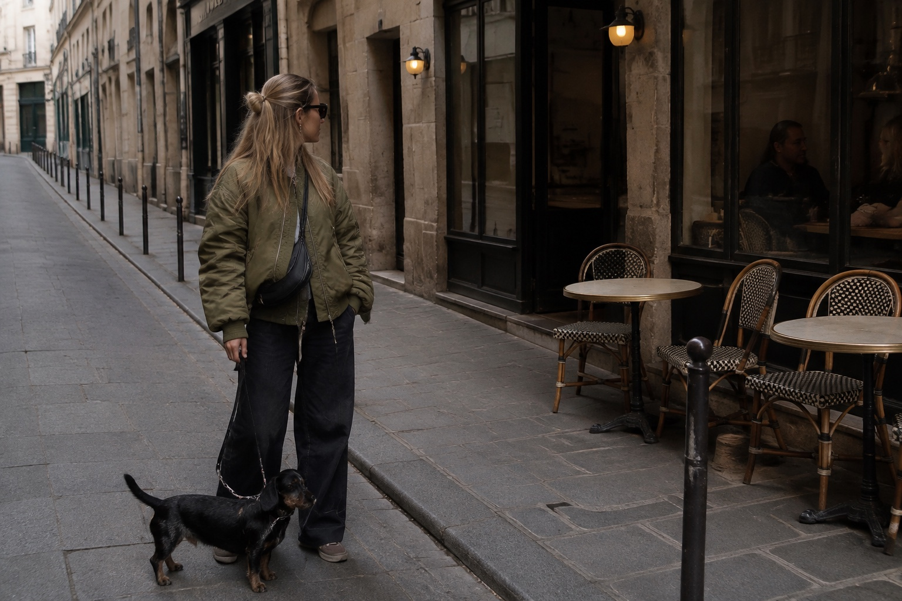

A plan shaped around the two of you
Thoughtfully
yours.
Choose the time, the neighbourhood and the feeling. We’ll connect places selected by Flōq into a day worth sharing.

01 Time02 Area03 Mood04 Your day
A plan for the two of you
Your route
The itinerary.
Drag the cards to reorder your day.